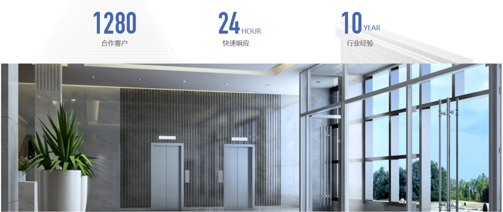

深圳市假日国际文旅集团（下称“集团”）成立于二OO六年，旗下有成熟的国际旅行社、旅游景区设计院、旅游管理公司及投资公司。集团秉持“和谐善筑”的价值观，通过『三全形态』全流程体验 ▪ 全功能满足 ▪ 全领域覆盖 运营机制，以投资、策划、设计、建设、运营、管理等手段，为旅游景区及主题乐园提供全产业链服务。
集团具备优秀的整合旅游项目资源的能力、丰富的项目落地经验、成功的实施案例以及优秀的操作团队。集团董事长是中国文化旅游业著名投资人，曾任海南省旅游投资开发总公司总经理、深圳市红源旅游景观集团总裁；拥有丰富的社会资源、投资经验、资本资源、挖掘评估投资机会的能力及精专的实操水平；投身旅游景区开发、旅游房地产建设二十余年，是三星堆（世界第九大奇迹）项目的缔造者；参与主导了国内外数十个旅游景区及主题公园的创意设计，并成功创意、策划、运营了众多项目。集团的其他主要成员均为国内旅游行业的资深专业人士，具备景区开发运营的完整经验与能力。
